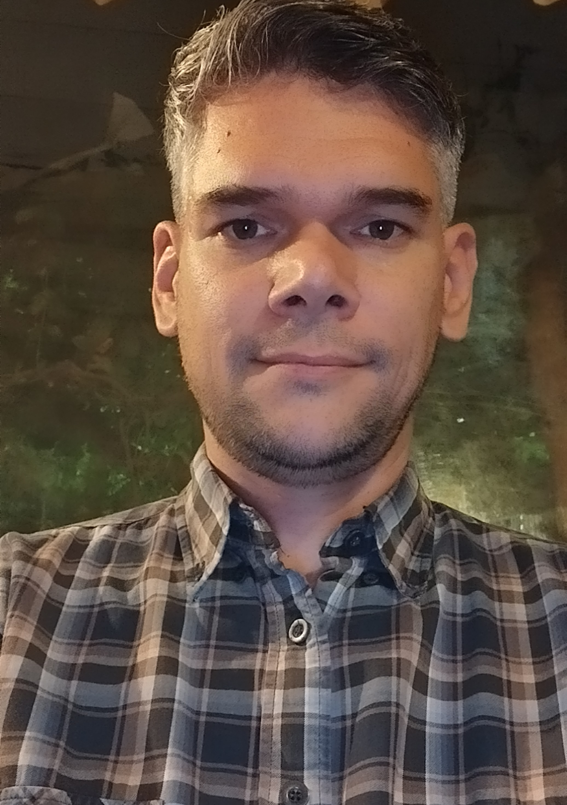

Σχετικά με εμένα

Γεια σας, ονομάζομαι Δημήτρης Ρόκκας.
Η τεχνολογία και οι υπολογιστές αποτελούσαν πάντα ένα από τα μεγαλύτερα ενδιαφέροντά μου. Η αγάπη μου για την Πληροφορική ξεκίνησε από τα σχολικά μου χρόνια και με οδήγησε στην επιλογή της αντίστοιχης κατεύθυνσης στο Λύκειο και στη συνέχεια στις σπουδές μου στο τμήμα Πληροφορικής και Τεχνολογίας Υπολογιστών του ΤΕΙ Λαμίας.
Στην επαγγελματική μου πορεία ασχολήθηκα για αρκετά χρόνια με διαφορετικούς τομείς, χωρίς όμως να χάσω το ενδιαφέρον μου για την τεχνολογία. Αποφάσισα, λοιπόν, να ασχοληθώ ξανά πιο συστηματικά με τον χώρο της Πληροφορικής, αυτή τη φορά εστιάζοντας στην ανάπτυξη ιστοσελίδων (Web Development).
Μέσα από προσωπική μελέτη, πρακτική εξάσκηση και εκπαιδευτικά σεμινάρια, ανανεώνω και διευρύνω συνεχώς τις γνώσεις μου στις σύγχρονες τεχνολογίες ανάπτυξης ιστοσελίδων, ξεκινώντας από HTML5 και CSS3 και προχωρώντας σταδιακά σε JavaScript και SQL.
Αυτό που με ελκύει στο Web Development είναι η δημιουργική διαδικασία πίσω από κάθε ιστοσελίδα. Μου αρέσει να δημιουργώ από την αρχή, να πειραματίζομαι με τον κώδικα, να αναζητώ λύσεις και να δίνω σε κάθε project τον δικό του χαρακτήρα. Στόχος μου είναι να αναπτύσσω λειτουργικές, σύγχρονες και καλαίσθητες ιστοσελίδες, προσαρμοσμένες στις ανάγκες κάθε έργου.
Πιστεύω στη συνεχή μάθηση, στην επιμονή και στη βελτίωση μέσα από την πράξη. Κάθε νέο project είναι για μένα μια ευκαιρία να αποκτήσω εμπειρία, να εξελίξω τις δεξιότητές μου και να πλησιάσω ακόμη περισσότερο τους επαγγελματικούς μου στόχους.
Αν αναζητάτε έναν συνεργάτη με αγάπη για την τεχνολογία, διάθεση για δημιουργία και πραγματικό ενδιαφέρον για τη δουλειά του, θα χαρώ να επικοινωνήσετε μαζί μου.